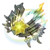

| Nome | Blade/Yinxing(nome real) |
|---|---|
| Elemento | Vento | Raridade | ✦ ✦ ✦ ✦ ✦ |
| Caminho | A Destruição |
| Sexo | Masculino |
| Especie | Nativo Xianzhou |
| Facção | Caçadores Stellaron (no perfil) Quinteto High-Cloud (antigo) | Mundo | O Xianzhou Loufu | Como obter | Uma alma perdida | Data de Lançamento | 2023-07-19 | Adicionado pela primeira vez | Versão 0.70 |
Ascensões e estatísticas
| Fase de Ascensão | Level | Base HP | Base ATK | Base DEF | Base SPD |
|---|---|---|---|---|---|
| 0✦ | 1/20 | 184 | 73 | 66 | 97 |
| 20/20 | 360 | 144 | 128 | 97 | |
| 1✦ | 20/30 | 434 | 173 | 155 | 97 |
| 30/30 | 526 | 210 | 188 | 97 | |
| 2✦ | 30/40 | 600 | 240 | 214 | 97 |
| 40/40 | 693 | 277 | 247 | 97 | |
| 3✦ | 40/50 | 766 | 306 | 273 | 97 |
| 50/50 | 859 | 343 | 306 | 97 | |
| 4✦ | 50/60 | 933 | 373 | 333 | 97 |
| 60/60 | 1,025 | 410 | 366 | 97 | |
| 5✦ | 60/70 | 1,099 | 439 | 392 | 97 |
| 70/70 | 1,191 | 476 | 425 | 97 | |
| 6✦ | 70/80 | 1,265 | 506 | 452 | 97 |
| 80/80 | 1,358 | 543 | 485 | 97 |
| Nível | Custo de Evolução | Materiais de Ascensão do Personagem | Materiais Necessários |
|---|---|---|---|
| 0 → 1 ✦ |  4,000 4,000 |
 5 5 |
|
| 1 → 2 ✦ | 8,000 |
10 |
|
| 2 → 3 ✦ | 16,000 |
3 |  6 6 |
| 3 → 4 ✦ | 40,000 |
7 | 9 |
| 4 → 5 ✦ | 80,000 |
20 |  6 6 |
| 5 → 6 ✦ | 160,000 |
35 | 9 |
Habilidades de combate
| Icone | Tipo | Nome | Descrição | Marcação | Energia | Resistência DMG |
|---|---|---|---|---|---|---|
| ATK básico | Espada Fragmentada | Causa 50% –110% do ATK de Blade como Wind DMG a um inimigo alvo. | Alvo único | Geração: 20 | 30 | |
| ATK básico | Floresta de Espadas | Consome HP igual a 10% do HP máximo de Blade e causa Wind DMG igual à soma de 20% -44% de seu ATK e 50% -110% de seu HP máximo para um único inimigo. Além disso, causa Wind DMG igual à soma de 8% -17,6% do ATK de Blade e 20% -44% de seu HP máximo para alvos adjacentes. Se o HP atual de Blade for insuficiente, seu HP será reduzido para 1 ao usar Forest of Swords. Forest of Swords não pode regenerar Skill Points. | Explosão | Geração: 30 | 60 (principal) 30 (adjacente) | |
| Skill | Paisagem infernal | Consome HP igual a 30% do HP máximo de Blade para entrar no estado Hellscape. Quando Hellscape está ativo, sua habilidade não pode ser usada, seu DMG causado aumenta em 12% –40% e seu ATK básico Shard Sword é aprimorado para Forest of Swords por 3 turno(s). Se o HP atual de Blade for insuficiente, seu HP será reduzido para 1 quando ele usar sua habilidade. Esta habilidade não regenera energia . Usar esta habilidade não encerra o turno atual. | Melhorar | Geração: 0 | ||
| Ultimate | Sentença de morte | Define o HP atual de Blade para 50% de seu HP máximo e causa ao único inimigo Wind DMG igual à soma de 24% -38% de seu ATK, 60% -95% de seu HP máximo e 60% -95% do HP total que ele perdeu na batalha atual. Ao mesmo tempo, causa Dano de Vento a alvos adjacentes igual à soma de 9,6%–15,2% de seu ATK, 24%–38% de seu HP máximo e 24%–38% do HP total que ele perdeu no batalha atual. O total de HP que Blade perdeu na batalha atual é limitado a 90% de seu HP máximo. Este valor será zerado e reacumulado após seu Ultimate ser usado. | Explosão | Custo: 130 Geração: 5 | 60 | |
 |
Talento | Presente de Shuhu | uando Blade sustenta DMG ou consome seu HP, ele ganha 1 pilha de Carga, acumulando até 5 vezes. Um máximo de 1 pilha de carga pode ser ganha cada vez que ele é atacado. Quando a pilha de carga atinge o máximo, lança imediatamente um ataque subsequente em todos os inimigos, causando Dano de Vento igual a 22% –48,4% do ATK de Blade mais 55% –121% de seu HP máximo. Ao mesmo tempo, restaura o HP de Blade em 25% de seu HP máximo. Após o ataque seguinte, todas as Cargas são consumidas. | AoE | Geração: 10 | Geração: 10 |
| Técnica | Vento Carma | Ataca imediatamente o inimigo. Depois de entrar em combate, consome 20% do HP máximo de Blade enquanto causa Wind DMG igual a 40% de seu HP máximo para todos os inimigos. Se o HP atual de Blade for insuficiente, seu HP será reduzido para 1 quando esta técnica for usada. |
Eidolons
| Icone | Nome da habilidade | Nivel | Descrição |
|---|---|---|---|
| Blade corta as profundezas do inferno | 1 | As ofertas Ultimate de Blade aumentaram adicionalmente o DMG para um único alvo inimigo, com a quantidade aumentada igual a 150% da perda total de HP de Blade na batalha atual. O total de HP que Blade perdeu na batalha atual é limitado a 90% de seu HP máximo. Este valor será zerado e reacumulado após o uso de seu Ultimate. | |
| Dez mil tristezas de um sonho desfeito | 2 | Quando Blade está no estado Hellscape, sua taxa CRIT aumenta em 15%. | |
| Lâmina Endurecida Sangra a Sombra Mais Fria | 3 | Nível final. +2, até um máximo de Nv. 15. Talento Nv. +2, até um máximo de Nv. 15. | |
 |
Rejeitado pela morte, infectado pela vida | 4 | Quando o HP atual de Blade cai para 50% ou menos de seu HP máximo, aumenta seu HP máximo em 20%. Acumula até 2 vezes. |
| Morte pelo Olhar dos Dez Lordes | 5 | Habilidade Nv. +2, até um máximo de Nv. 15. ATK Básico Nv. +1, até um máximo de Nv. 10. | |
 |
Renascer em uma casca vazia | 6 | O número máximo de pilhas de carga é reduzido para 4. O DMG do ataque subsequente desencadeado pelo talento de Blade aumenta adicionalmente em 50% de seu HP máximo. |
Traços
| Custo Total (1 → 6 para rastreamento de ATK básico) | ||||||
|---|---|---|---|---|---|---|
| 240.000 |
6 |
7 |
7 |
 3 3 |
 8 8 |
 11 11 |
| Custo total (1 → 10 para um rastreamento) | ||||||||
|---|---|---|---|---|---|---|---|---|
| 652.000 |
9 |
13 |
7 |
3 |
15 |
30 |
3 |  1 1 |